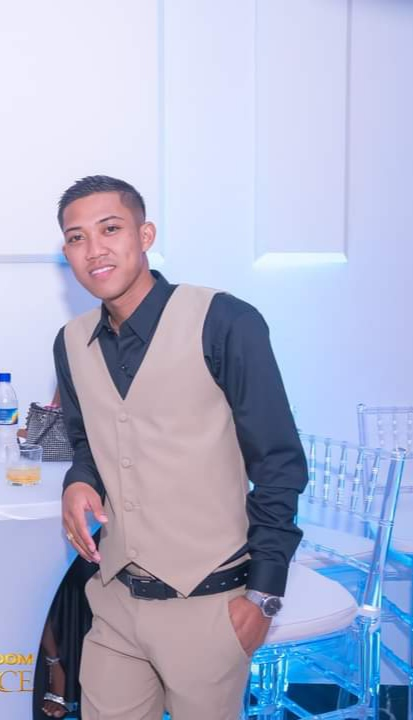

“Driven by curiosity, creativity and the ambition to improve processes through technology.”
Mijn naam is Isnyanto Modiwirijo. Ik ben een leergierige en ambitieuze student met een sterke interesse in bedrijfsprocessen, technologie en digitalisering. Ik richt mij graag op oplossingen die organisaties efficiënter, overzichtelijker en gebruiksvriendelijker maken. Door creativiteit te combineren met technologie probeer ik processen slimmer en effectiever te laten verlopen.
Momenteel studeer ik Bedrijfskundige Informatica aan de University of Applied Science and Technology (UNASAT), waar ik mij verder ontwikkel binnen technologie, databases, procesanalyse en digitale systemen.
Daarnaast ben ik werkzaam binnen een omgeving waar processen, procedures en structuur centraal staan. Deze ervaring heeft mijn interesse in bedrijfsprocessen, systemen en digitalisering verder versterkt.
Een persoonlijke portfolio website ontwikkeld om mijn vaardigheden, interesses, projecten en ontwikkeling binnen ICT en Bedrijfskundige Informatica te presenteren.
Een prototypeconcept gericht op veiligheid en ondersteuning, waarbij technologie en praktische toepassingen gecombineerd worden om innovatieve oplossingen te ontwikkelen.
In de toekomst hoop ik bedrijven en vooral kleine ondernemers in Suriname te ondersteunen bij het verbeteren en digitaliseren van hun bedrijfsprocessen.